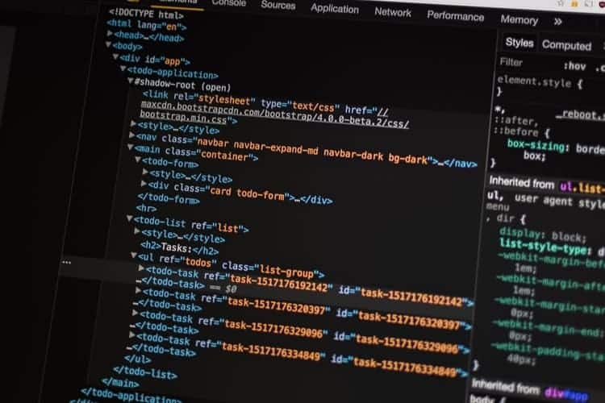

Hackers são pessoas que se dedicam intensamente a solucionar problemas e criar soluções que envolvem tecnologia, computação e informática.
O termo hacker, originado do inglês hack, que significa cortar alguma coisa de forma grosseira ou irregular, é popularmente usado para definir especialistas em computação que utilizam o alto conhecimento para cometer crimes virtuais. No entanto, essa definição está errada! Hackers são pessoas com um conhecimento profundo de informática e computação que trabalham desenvolvendo e modificando softwares e hardwares de computadores, não necessariamente para cometer algum crime. Eles também desenvolvem novas funcionalidades no que diz respeito a sistemas de informática. Portanto, qualquer pessoa que tenha conhecimento profundo em alguma área específica da computação, descobrindo utilidades além das previstas nas especificações originais, pode ser chamado de hacker.
A origem do termo hacker surgiu na década de 1960, nos Estados Unidos. Começou com o uso da expressão “hack” para designar uma solução inovadora para qualquer problema. Com o passar dos anos, o termo foi associado a programadores de computador, que na época estavam destacando-se no Instituto de Tecnologia de Massachusetts (MIT) e em outras partes do mundo. Eles aliavam conhecimento específico de computação ao instinto criativo. Apesar de terem surgido nos Estados Unidos, os hackers acabaram tornando-se um fenômeno global, sendo possível encontrá-los em qualquer parte do mundo. Há locais, como no Paquistão e na Índia, que há uma competição acirrada entre eles pelos melhores empregos.
Os hackers hoje têm um mercado muito amplo para atuarem, principalmente para aqueles que decidem dedicar-se a sistemas de segurança de informação. Com tudo hoje sendo feito pela internet, de uma simples compra de sapatos a operações financeiras com criptomoedas, a área expandiu-se muito para aqueles que detêm o conhecimento em programação. O hacker pode atuar em setores ligados à perícia forense, pesquisas de vulnerabilidade, engenharia de projetos, desenvolvimento de softwares, testes de invasão, gestão de riscos, entre outros. Um hacker pode ganhar muito dinheiro com as recompensas dadas por empresas que lançam desafios para terem seus sistemas invadidos e, com isso, desenvolverem melhorias de segurança. A atuação do hacker geralmente exige formação em alguma área ligada à informática, já que a maioria desses cursos possui matérias relacionadas à segurança da informação. Entre as opções, estão as graduações de Ciência da Computação, Engenharia da Computação, Redes de Computadores, Sistemas de Informação, Engenharia de Software e Tecnologia da Informação (TI).